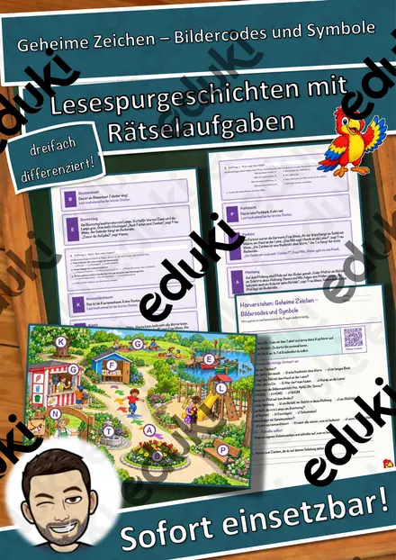
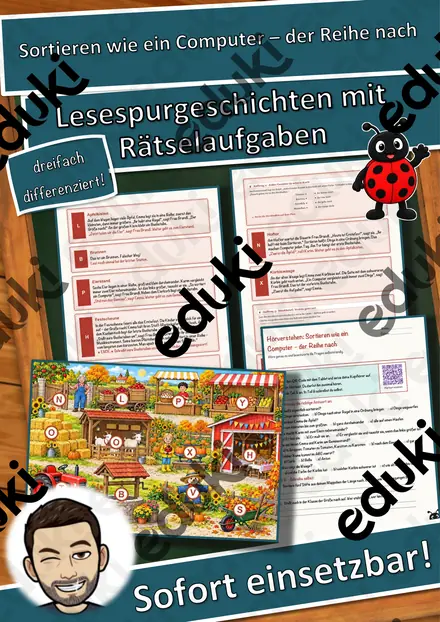
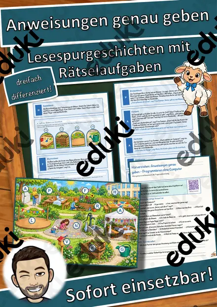
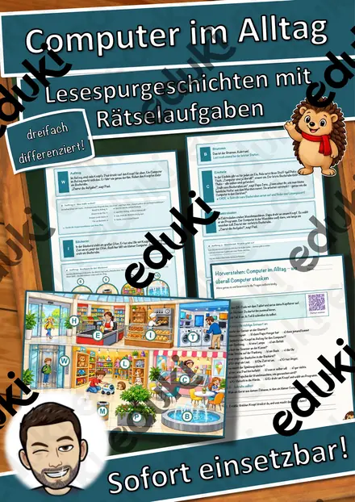
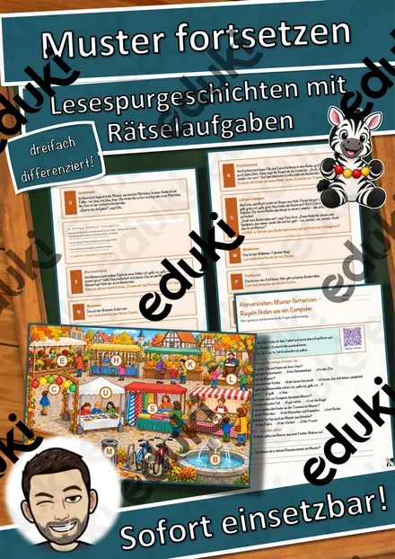
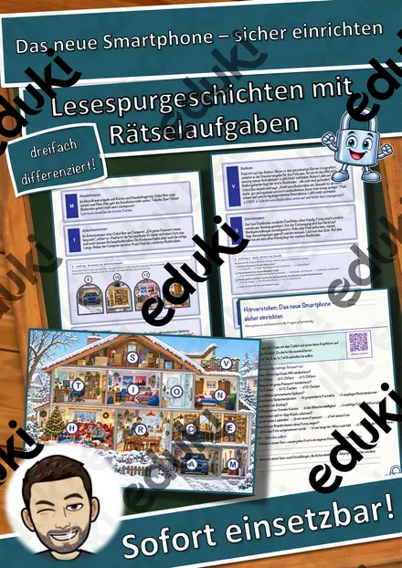
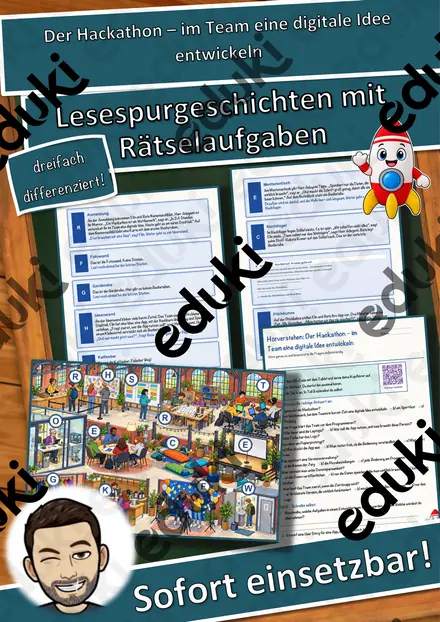

Der kleine Bodenroboter – Befehle Schritt für Schritt – Lesespurgeschichte mit Rätselaufgaben (Klasse 1)
Der kleine Bodenroboter – Befehle Schritt für Schritt – Lesespurgeschichte Informatik (Klasse 1/2)Schick deine Klasse auf eine Lesespur durch einen Roboter-Tag! Aylin und Theo aus der 2a lernen mit ihrem Lehrer Herrn Winkler den kleinen Lernroboter Robbi kennen. Im Sitzkreis erfahren sie: Ein Roboter ist eine Maschine und macht nur, was man ihm vorher sagt. Am Tastenbrett lernen sie die Pfeiltasten kennen, auf dem Felderteppich sehen sie, dass ein Tastendruck genau ein Feld bedeutet, und am Pfeilkartentisch legen sie ihr erstes Programm – eine Reihe von Befehlen, bei der die Reihenfolge zählt. Am Bodengitter spielt Aylin selbst Roboter, an der Hindernisbahn wird der Weg geplant und Felder gezählt, und am Fehlertisch wird ein falscher Pfeil gesucht und verbessert. Zum Schluss fährt Robbi Feld für Feld zur Schatzinsel. Pieps, Theos Stoff-Maus, ist immer dabei. Am Ende jedes Abschnitts verrät ein Hinweis den nächsten Ort auf dem Plan – nur wer genau liest, findet den Weg und sammelt alle geheimen Buchstaben zum Lösungswort.
Die perfekte Lesespur für den Einstieg in die INFORMATIK in der 1. und 2. Klasse – „Programmieren ohne Bildschirm“, ideal für Projekttage, Vertretungsstunden und fächerübergreifend mit Deutsch und Mathematik: Sie verbindet erstes sinnentnehmendes Lesen mit Befehlen, Wegen und Reihenfolgen, genauem Beschreiben und Fehlerkultur. Der Lernroboter ist frei erfunden – das Material passt zu jedem Bodenroboter oder ganz ohne Gerät. Das Material ist SOFORT EINSETZBAR und in DREI DIFFERENZIERUNGSSTUFEN (leicht ★ / mittel ★★ / schwer ★★★) angelegt.WICHTIG: Das komplette Material ist sowohl in FARBE als auch in SCHWARZ-WEISS enthalten – ideal zum Sparen von Druckkosten.DAS IST ENTHALTEN
- Lesespurgeschichte in 3 Niveaus (leicht, mittel, schwer)
- farbiger Plan vom Roboter-Raum als Suchkarte
- Hörverstehen mit QR-Code zur MP3 (selbstständiges Hören mit Kopfhörern)
- vier Aufträge auf dem Weg: eine Zuordnung, ein Quiz, eine Rechenaufgabe und ein Steckbrief
- Rätselseite (Wörter-Suchsel + Fragen zum Bodenroboter)
- Ausmalbild zum Thema (Kinder legen Pfeilkarten für den Roboter)
- ausführliches Lösungsblatt für die Lehrkraft
- alles zusätzlich als komplette Schwarz-Weiß-VarianteSO GEHT DIE LESESPURDie Kinder lesen ab START, finden im Text den nächsten Ort, suchen ihn auf dem Plan und lesen bei dieser Station weiter. An jeder richtigen Station gibt es einen Buchstaben. Eingeplante Sackgassen (Bücherregal, Waschbecken, Garderobe, Staffelei) sind keine Stationen und dienen der Selbstkontrolle. Am Ende werden die gesammelten Buchstaben umgestellt und ergeben ein geheimes Lösungswort. (Die Lösungen sind selbstverständlich nur im Lösungsblatt für die Lehrkraft enthalten.)INHALTLICHER SCHWERPUNKTWas ein Roboter ist, Tasten und ihre Wirkung, ein Befehl = ein Schritt, Drehen auf der Stelle, Programm als Reihe von Befehlen, Reihenfolge, genaue Anweisungen geben (Kind als Roboter), Wege planen und Felder zählen, Fehler finden und verbessern.ABGEDECKTER LEHRPLAN (Klasse 1/2, Informatik / informatische Grundbildung)
- Mathematik (LehrplanPLUS Bayern) – Jahrgangsstufe 1/2: Sich im Raum orientieren – Wege nach Anweisung verfolgen und beschreiben; Addition, Subtraktion und erste Malaufgaben im Zahlenraum bis 20.
- Heimat- und Sachunterricht – Technik: die Funktion von Geräten erklären und sachgerecht nutzen.
- Deutsch – Lesen: kurze Texte sinnentnehmend lesen; Zuhören: einem Hörtext folgen (Hörverstehen mit MP3).
- Informatische Grundbildung / Medienkompetenz: Befehle, Programme, Algorithmen und Fehlersuche spielerisch kennenlernen.
Geeignet für Freiarbeit, Stationenlernen, Vertretungsstunden, Wochenplan, Projekttage und als Einstieg vor der Arbeit mit einem echten Lernroboter. Klassenstufe 1/2.
Ähnliche Materialien

Geheime Zeichen – Bildercodes und Symbole – Lesespurgeschichte mit Rätselaufgaben (Klasse 1)

Sortieren wie ein Computer – der Reihe nach – Lesespurgeschichte mit Rätselaufgaben (Klasse 1)

Anweisungen genau geben – Programmieren ohne Computer – Lesespurgeschichte mit Rätselaufgaben (Klasse 1)

Computer im Alltag – wo überall Computer stecken – Lesespurgeschichte mit Rätselaufgaben (Klasse 1)

Muster fortsetzen – Regeln finden wie ein Computer – Lesespurgeschichte mit Rätselaufgaben (Klasse 1)

Das neue Smartphone – sicher einrichten – Lesespurgeschichte mit Rätselaufgaben (Klasse 7)

Der Hackathon – im Team eine digitale Idee entwickeln – Lesespurgeschichte mit Rätselaufgaben (Klasse 10)